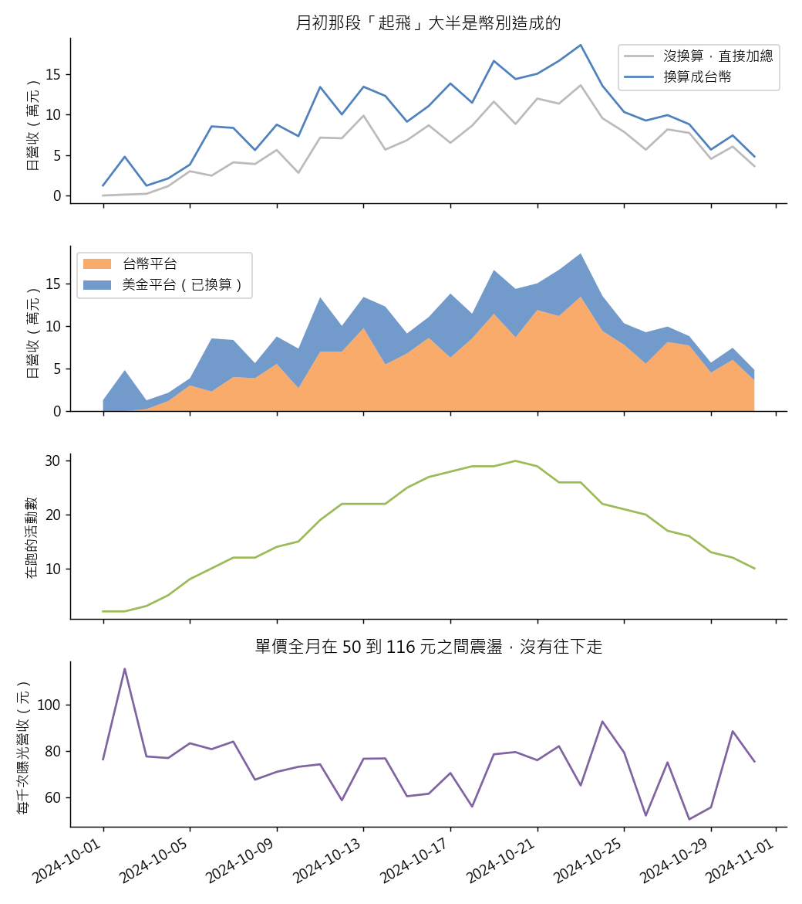

練習 16 - 月底廣告營收下滑
在本單元中，會介紹第 16 題「10 月下旬廣告營收一路往下掉，業務主管要你在會前說清楚是不是出事了」背後的商業問題、它練的是哪一種資料分析，以及從資料到結論的完整做法、程式與圖表。
建議先回 Hub - 資料分析練習案例庫 自己試著做一次，再來對照這一頁。
題目
有人會這樣問你：這個月廣告收入從 10 月 23 日以後一路往下掉，月底只剩高峰的四分之一。是市場冷掉了，還是我們自己出了什麼問題？
| 難度 | 入門 |
| 組別 | 第 6 組：時間、存活與回頭看的陷阱 |
| 用哪張表 | ad_daily（L1 的 ad_daily_2024_10.csv） |
| 對應單元 | 時間序列 明天的流量會怎樣 |
這一題在商業上要回答什麼
營收往下掉，會前要先分清楚是市場冷了、單價崩了，還是檔期自然結束。答案不同，該做的事完全不同：降價搶單、檢查產品，或只是提早排下個月的檔期。
這一題練的是哪一種資料分析
這一題練的是時間序列的拆解思維：把總營收拆成「量」（在跑的活動數）與「價」（每千次曝光營收）分開畫。畫之前先確認整條序列的單位一致，才不會把資料問題讀成市場趨勢。
怎麼做
先看 currency 欄，把記成 USD 的列乘 31.5 換成台幣，再依 stat_date 加總成 31 天的日營收序列；同一天再算兩個東西：當天在跑的活動數（campaign_id 去重計數）與總曝光數，然後算每千次曝光營收（台幣營收 ÷ 曝光數 × 1000）。三條線畫在一起看。用 Python 的理由：853 列資料用 pandas 的 groupby 三行就變成日序列，算完直接畫圖，不必把資料搬到別的工具。
程式
這一題用 Python，整支程式如下。資料放在 dist/L1 與 dist/L2 兩個資料夾；print 那幾行會把算出來的關鍵數字印出來，畫圖的部分在最後面。
from _kmg import *
a = ad()
a["twd"] = twd(a)
print("換算後全月營收", round(float(a["twd"].sum())))
print("直接加總", round(float(a["revenue"].sum())))
d = a.groupby("stat_date").agg(rev=("twd", "sum"), raw=("revenue", "sum"),
camps=("campaign_id", "nunique"), imp=("impression_cnt", "sum"))
d["ecpm"] = d["rev"] / d["imp"] * 1000
def day(n):
return pd.Timestamp("2024-10-%02d" % n)
print("10/1 日營收（萬）", d.loc[day(1), "rev"] / 1e4)
print("10/23 日營收（萬）", d.loc[day(23), "rev"] / 1e4)
print("10/31 日營收（萬）", d.loc[day(31), "rev"] / 1e4)
print("營收高點在 10/23", bool(d["rev"].idxmax() == day(23)))
print("10/1 在跑的活動數", int(d.loc[day(1), "camps"]))
print("在跑活動數高點", int(d["camps"].max()))
print("10/31 在跑的活動數", int(d.loc[day(31), "camps"]))
print("每千次曝光營收 最低", float(d["ecpm"].min()))
print("每千次曝光營收 最高", float(d["ecpm"].max()))
slope = float(np.polyfit(np.arange(len(d)), d["ecpm"].values, 1)[0])
print("每千次曝光營收沒有走低（日斜率 ≥ -0.5 元）", slope >= -0.5)
print("每千次曝光營收的日斜率 %.2f 元／天，一個月下來不到 15 元，相對於 50 到 116 元的日間震盪看不出趨勢" % slope)
first = a.groupby("platform")["stat_date"].min()
print("10/1–10/2 只有程序化平台在投", bool(a.loc[a["stat_date"] <= day(2), "platform"].isin(["openx_prog", "adx_prog"]).all()))
print("自助平台進場日", str(first["kmg_selfserve"].date()))
print("直客平台進場日", str(first["kmg_direct"].date()))
print("10/1 未換算營收（元）", float(d.loc[day(1), "raw"]))
print("10/2 未換算營收（元）", float(d.loc[day(2), "raw"]))
g_raw = float(d.loc[day(7), "raw"] / d.loc[day(1), "raw"])
g_conv = float(d.loc[day(7), "rev"] / d.loc[day(1), "rev"])
print("10/1 到 10/7 未換算漲幾倍", g_raw)
print("10/1 到 10/7 換算後漲幾倍", g_conv)
print("10/3 未換算 比前一天（倍）", float(d.loc[day(3), "raw"] / d.loc[day(2), "raw"]))
print("10/3 換算後 比前一天（倍）", float(d.loc[day(3), "rev"] / d.loc[day(2), "rev"]))
print("10/4 未換算 比前一天（倍）", float(d.loc[day(4), "raw"] / d.loc[day(3), "raw"]))
print("10/4 換算後 比前一天（倍）", float(d.loc[day(4), "rev"] / d.loc[day(3), "rev"]))
by_cur = a.groupby(["stat_date", "currency"])["twd"].sum().unstack(fill_value=0)
flip = (d.loc[day(3), "raw"] > d.loc[day(2), "raw"]) and (d.loc[day(3), "rev"] < d.loc[day(2), "rev"])
fig, ax = plt.subplots(4, 1, figsize=(8, 9), sharex=True)
ax[0].plot(d.index, d["raw"] / 1e4, color="#bbbbbb", label="沒換算，直接加總")
ax[0].plot(d.index, d["rev"] / 1e4, color="#4f81bd", label="換算成台幣")
ax[0].set_ylabel("日營收（萬元）")
ax[0].set_title("月初那段「起飛」大半是幣別造成的")
ax[0].legend()
ax[1].stackplot(by_cur.index, by_cur["TWD"] / 1e4, by_cur["USD"] / 1e4, labels=["台幣平台", "美金平台（已換算）"],
colors=["#f79646", "#4f81bd"], alpha=0.8)
ax[1].set_ylabel("日營收（萬元）")
ax[1].legend(loc="upper left")
ax[2].plot(d.index, d["camps"], color="#9bbb59")
ax[2].set_ylabel("在跑的活動數")
ax[3].plot(d.index, d["ecpm"], color="#8064a2")
ax[3].set_ylabel("每千次曝光營收（元）")
ax[3].set_title("單價全月在 50 到 116 元之間震盪，沒有往下走")
fig.autofmt_xdate()
save_fig(fig, "ex16_timeseries.png")
程式開頭的 from _kmg import * 載入共用的讀檔、去重、換幣別與畫圖函式，內容在 練習 01 - 月會上的則數對不對 的「共用的讀檔函式」那一段。
結果
換算後全月營收約 297.5 萬元，直接加總只有 194.8 萬元，少掉大約三分之一。日營收從 10/1 的 1.3 萬元爬到 10/23 的 18.6 萬元，月底掉回 4.8 萬元；但同一天在跑的活動數也從 2 檔爬到 30 檔再掉到 10 檔。每千次曝光營收全月都在 50 到 116 元之間上下震盪、沒有走低的趨勢。所以營收的起落是跟著檔期走，不是單價崩掉。
跑出來的關鍵數字
| 項目 | 結果 |
|---|---|
| 換算後全月營收 | 2975076 |
| 直接加總 | 1947799 |
| 10/1 日營收（萬） | 1.2797 |
| 10/23 日營收（萬） | 18.551 |
| 10/31 日營收（萬） | 4.8458 |
| 營收高點在 10/23 | 是 |
| 10/1 在跑的活動數 | 2 |
| 在跑活動數高點 | 30 |
| 10/31 在跑的活動數 | 10 |
| 每千次曝光營收 最低 | 50.3961 |
| 每千次曝光營收 最高 | 115.4507 |
| 每千次曝光營收沒有走低（日斜率 ≥ -0.5 元） | 是 |
| 10/1–10/2 只有程序化平台在投 | 是 |
| 自助平台進場日 | 2024-10-03 |
| 直客平台進場日 | 2024-10-04 |
| 10/1 未換算營收（元） | 406.25 |
| 10/2 未換算營收（元） | 1527.64 |
| 10/1 到 10/7 未換算漲幾倍 | 101.5103 |
| 10/1 到 10/7 換算後漲幾倍 | 6.5311 |
| 10/3 未換算 比前一天（倍） | 1.6305 |
| 10/3 換算後 比前一天（倍） | 0.261 |
| 10/4 未換算 比前一天（倍） | 4.7927 |
| 10/4 換算後 比前一天（倍） | 1.7034 |
補充
- 每千次曝光營收的日斜率 -0.46 元／天，一個月下來不到 15 元，相對於 50 到 116 元的日間震盪看不出趨勢
圖表

第一張是沒換算與換算後的日營收，第二張把台幣平台與美金平台（已換算）疊起來，第三張是每天在跑的活動數，第四張是每千次曝光營收。營收的起落跟著活動數走，單價沒有往下掉。
接著做
上一題 練習 15 - 會賣訂閱的稿子、下一題 練習 17 - 找出炎上的留言區，或回到 Hub - 資料分析練習案例庫 挑別的題目。
學生版｜更新於 2026-09-13 11:19